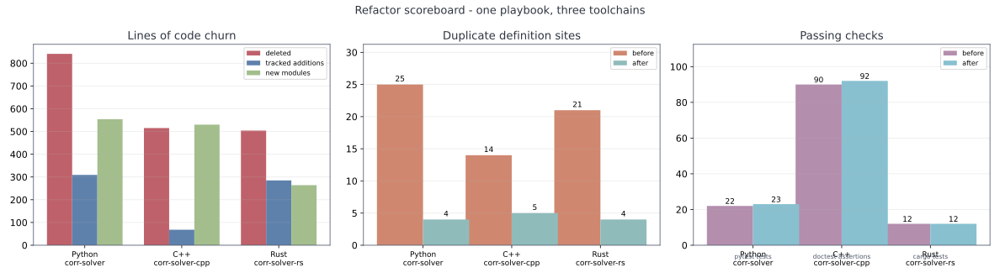
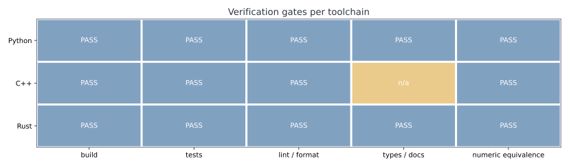

layout: true class: typo, typo-selection --- count: false class: nord-dark, middle, center # 🧩 Refactoring corr-solver ## One playbook, three languages — Python · C++ · Rust 🐍 ⚙️ 🦀 ### 📐 Same math, same experiments, **zero numeric drift** @luk036 · September 2026 --- ### 🗺️ Agenda .pull-left[ **Part 1 — Why** 🔍 *(3 min)* - What corr-solver computes - The three sibling projects - The audit: what we found **Part 2 — The playbook** 🧰 *(7 min)* - Nine design patterns - Facade · Strategy · Extract Class - Value Object · Factory · Decorator · DI **Part 3 — Per-language** 🌍 *(9 min)* - Python: the reference - C++: the 419-line monolith - Rust: the missing driver ] .pull-right[ **Part 4 — Verification** ✅ *(6 min)* - Why *arithmetic order* is sacred 🔬 - Three toolchains, one contract - Iteration counts & bit-identical CSVs - The scoreboard **Part 5 — Lessons** 🎓 *(3 min)* - Getting refactors *boring* - Anti-patterns avoided - When **not** to refactor **Q&A** ❓ *(2 min)* ] > 🧭 **Thesis:** a good refactor is a *no-op with better bones* — the tests and the bits must not move. 🪨 --- class: nord-light, middle, center ## 🔍 Part 1 — Why Refactor? --- ### 📐 What corr-solver Computes Fit a correlation model $\Omega(p) = \sum_k p_k \Sigma_k$ built from pairwise site distances: $$ \Omega(p) \;=\; \sum_{k} {\color{#5e81ac}p_k}\,{\color{#a3be8c}\Sigma_k}, \qquad (\Sigma_k)_{ij} = \varphi_k\!\left(\lVert s_i - s_j\rVert\right) $$ .pull-left[ **LSQ** 📏 — least-squares residual $$ \min_{p}\; \lVert {\color{#bf616a}Y} - {\color{#5e81ac}\Omega(p)} \rVert_F \quad \text{s.t.} \quad {\color{#5e81ac}\Omega(p)} \succeq 0 $$ **MLE** 📊 — Gaussian likelihood $$ \min_{p}\; \log\det {\color{#5e81ac}\Omega(p)} + \operatorname{Tr}\!\bigl({\color{#5e81ac}\Omega(p)}^{-1}{\color{#bf616a}Y}\bigr) $$ $$ \text{s.t.}\quad 2{\color{#bf616a}Y} \succeq {\color{#5e81ac}\Omega(p)} \succeq 0 $$ ] .pull-right[ **CCP** ♻️ — convex-concave procedure $$ \min_{\Omega}\; \operatorname{Tr}(\Omega^{-1}{\color{#bf616a}Y}) + \operatorname{Tr}\!\bigl({\color{#5e81ac}M_k}\,\Omega\bigr), \quad {\color{#5e81ac}M_k} = \Omega_k^{-1} $$ - All three solved by the **ellipsoid / cutting-plane** method ✂️ - Oracles: `LMI0`, `LMI`, `QMI` + a `GMIOracle` decorator - Same `assess_feas` / `assess_optim` protocol everywhere 🔌 ] --- ### 🔗 The Pipeline .mermaid[ <pre> graph LR S["Halton sites\n20 x 2"] --> D["distance matrix D"] D --> B["basis matrices\nSigma_1 ... Sigma_m"] Y["biased sample\ncovariance Y"] --> O["cutting-plane\noracles"] B --> O O --> P["coefficients p\nOmega(p)"] style S fill:#eceff4,stroke:#4c566a,stroke-width:3px style D fill:#fff9c4,stroke:#f57f17,stroke-width:3px style B fill:#d5f5e3,stroke:#2e7d32,stroke-width:3px style Y fill:#fadbd8,stroke:#c0392b,stroke-width:3px style O fill:#e3f2fd,stroke:#1565c0,stroke-width:3px style P fill:#f3e5f5,stroke:#6a1b9a,stroke-width:3px </pre> ] > 🎯 The *math* never changed in this session. Only the **bones** around it. 🦴 --- ### 🌍 Three Sibling Projects .mermaid[ <pre> graph TB PY["Python\ncorr-solver\nnumpy + Protocol"] --> C["identical math\nidentical experiments"] CPP["C++20\ncorr-solver-cpp\ntemplates + Werror"] --> C RS["Rust\ncorr-solver-rs\nndarray + traits"] --> C C --> E["four CSV tables\nbit-for-bit identical"] style PY fill:#e3f2fd,stroke:#1565c0,stroke-width:3px style CPP fill:#fde2e4,stroke:#c0392b,stroke-width:3px style RS fill:#fff3cd,stroke:#b8860b,stroke-width:3px style C fill:#d5f5e3,stroke:#2e7d32,stroke-width:3px style E fill:#ffccbc,stroke:#bf360c,stroke-width:3px </pre> ] .pull-left[ | repo | stack | build | |:--|:--|:--| | **corr-solver** 🐍 | numpy · scipy · numba | `pytest` | | **corr-solver-cpp** ⚙️ | C++20 · ellalgo-cpp | `xmake` | | **corr-solver-rs** 🦀 | ndarray · ellalgo-rs | `cargo` | ] .pull-right[ - Same experiments: **poly vs B-spline**, **LSQ vs MLE vs CCP** 📈 - Same reference outputs: `cond.csv`, `fits.csv`, `ccp.csv`, `nsweep.csv` 📁 - → a **free oracle** for "did I break the math?" 🤖 ] --- ### 🔍 The Audit — What We Found .font-sm[ | smell 💨 | Python 🐍 | C++ ⚙️ | Rust 🦀 | |:--|:--:|:--:|:--:| | **no public interface** — consumers re-declare symbols | via duck typing | `extern` in **4** files 📛 | re-implemented drivers | | **solver cores copy-pasted** | **7** copies 😱 | 3 (fitting + 2 bins) | 2 (test + bin) | | **scratch / objective duplicated** | 3 copies | 2 oracle classes | 2 modules | | **magic start values** (`256`, `4`, `500`, `1e100`) | 3 sites | 3 sites | 3 sites | | **`Arr`↔matrix conversions** | n/a | n/a | **6** copies 😱 | | **cross-imports between experiments** | 3 hops 🔗 | n/a | n/a | | **mutable global RNG** | `np.random.seed` | `random_seed(5)` | `thread_local!` | | **dead / broken scripts** | `plot_models.py`, `gaussian.py` 💀 | — | — | ] > 🚨 None of these were *bugs* — the tests passed. They were **taxes on every future change**. 💸 --- class: nord-light, middle, center ## 🧰 Part 2 — The Playbook --- ### 🧰 Nine Patterns, One Playbook .font-sm[ | # | pattern 🎨 | what it fixes | where it landed | |:--|:--|:--|:--| | 1 | **Facade** 🏛️ | missing public API | `corr_solver.hpp`, `fitting.rs` | | 2 | **Strategy / Protocol** 🔌 | poly vs B-spline, x-layouts | `basis`, `layouts`, `protocols` | | 3 | **Extract Class / Template Method** 🧩 | shared MLE scratch | `MleScratch` + `optim_cut` | | 4 | **Value Object** 📦 | sentinel `Arr{}` / `Option` | `FitResult` | | 5 | **Abstract Factory** 🏭 | pure-Python vs Numba | `backends`, `make_backend` | | 6 | **Factory** 🧪 | hardcoded kernels | `kernels`, `KERNELS` | | 7 | **Decorator** 🎀 | monotone constraint | `MonoDecreasingOracle2` + `with_mono` | | 8 | **Dependency Injection** 💉 | global RNG | `rng=` / `seeded_rng` | | 9 | **Facade over shared helpers** 🧵 | duplicated utilities | `convert`, `ndops`, `math_utils` | ] > ⚖️ Patterns are only worth it when they **delete duplication** or **name a hidden contract**. Otherwise they add indirection. 🚫 --- ### 🏛️ Pattern 1 — Facade: The Missing Interface .pull-left[ **Before** ❌ — no header, so every consumer guessed: ```text tests ---- extern decls ----. benchmark ---- extern decls ----.--> lsq_corr_ell.cpp experiments ---- extern decls ----' (419 lines, everything) ``` - signatures drift silently 🐛 - change a default arg → link error 💥 - oracles trapped inside a `.cpp` 🔒 ] .pull-right[ **After** ✅ — one header owns the contract: .mermaid[ <pre> graph LR T["tests"] --> H["corr_solver.hpp"] B["benchmark"] --> H E["experiments"] --> H H --> C["corr_solver.cpp"] H --> O["oracles\nhpp + cpp"] H --> L["layouts\nhpp + cpp"] H --> G["geometry + sites\ncpp"] style H fill:#ffccbc,stroke:#bf360c,stroke-width:3px style T fill:#eceff4,stroke:#4c566a,stroke-width:3px style B fill:#eceff4,stroke:#4c566a,stroke-width:3px style E fill:#eceff4,stroke:#4c566a,stroke-width:3px style C fill:#d5f5e3,stroke:#2e7d32,stroke-width:3px style O fill:#d5f5e3,stroke:#2e7d32,stroke-width:3px style L fill:#fff9c4,stroke:#f57f17,stroke-width:3px style G fill:#e3f2fd,stroke:#1565c0,stroke-width:3px </pre> ] - consumers `#include`, never `extern` 📎 - **4** hand-written declaration blocks **deleted** 🧹 ] > ✍️ A facade is the cheapest pattern with the highest leverage: it turns *convention* into a *compiler-checked contract*. 🔒 --- ### 🔌 Pattern 2 — Strategy: Basis & Layout .pull-left[ **Two orthogonal strategies** 🧭 $$ \text{model} \;\times\; \text{variable layout} $$ - **`Basis`** — *what* the columns are - `PolynomialBasis` → $\varphi_k(d) = d^k$ - `BSplineBasis` → clamped quadratic, monotone 🎀 - **`Layout`** — *which variables* the solver sees - `MleLayout` → plain $x \in \mathbb{R}^m$ - `LsqAugmentedLayout` → $(x, t) \in \mathbb{R}^{m+1}$ ] .pull-right[ .mermaid[ <pre> graph TB F["fit(Y, site, m, oracle, core, basis)"] --> B1["PolynomialBasis"] F --> B2["BSplineBasis"] B1 --> L["Layout\ninitial guess"] B2 --> L L --> M["MleLayout\nplain n"] L --> A["LsqAugmented\ncoeffs + t"] style F fill:#ffccbc,stroke:#bf360c,stroke-width:3px style B1 fill:#d5f5e3,stroke:#2e7d32,stroke-width:3px style B2 fill:#d5f5e3,stroke:#2e7d32,stroke-width:3px style L fill:#e3f2fd,stroke:#1565c0,stroke-width:3px style M fill:#fff9c4,stroke:#f57f17,stroke-width:3px style A fill:#fff9c4,stroke:#f57f17,stroke-width:3px </pre> ] > 🧠 The augmented-variable convention was a **leaky abstraction**: every caller hardcoded `n+1` or `n`. Now it is *declared once*. 📣 ] --- ### 🧩 Pattern 3 — Extract Class / Template Method .pull-left[ **The duplicated MLE preamble** 🔁 Both MLE-family oracles did: $$ R \leftarrow \sqrt{\Omega}, \quad S \leftarrow R^{-\top}R^{-1}, \quad SY \leftarrow S{\color{#bf616a}Y} $$ …and both ended with the *same* shrink: ```text if f < 0: t = value; f = 0; shrunk = true ``` - **2** copies in C++ 🔴 - **2** copies in Rust 🔴 - 1 copy in Python 🔴 ] .pull-right[ .mermaid[ <pre> graph LR M["MleOracle"] --> S["MleScratch\nR, S, SY"] C["CccpMleOracle"] --> S M --> O["optim_cut\nt + cut"] C --> O S --> L["LDLT sqrt\ninv_upper_tri"] style M fill:#e3f2fd,stroke:#1565c0,stroke-width:3px style C fill:#e3f2fd,stroke:#1565c0,stroke-width:3px style S fill:#d5f5e3,stroke:#2e7d32,stroke-width:3px style O fill:#f3e5f5,stroke:#6a1b9a,stroke-width:3px style L fill:#eceff4,stroke:#4c566a,stroke-width:3px </pre> ] > 🧷 One class owns the *shared scratch*; one function owns the *best-so-far fold*. The oracles now differ **only** in their gradient. 🎯 ] --- ### 📦 Pattern 4 — Value Object: `FitResult` .pull-left[ **Before** ❌ — three answers, two conventions: ```python # Python: tuple, empty array = failure return np.poly1d(pa), num_iters, feasible # C++: tuple, Arr{} = failure return std::tuple<Arr, size_t>{Arr{}, iters} # Rust: Option vs empty, mixed -> (Arr, usize) // 0-length = failure -> (Option<Arr>, usize) // None = failure ``` - failure signal is **positional** 👎 - callers write `coeffs.size() != m` 🤞 ] .pull-right[ **After** ✅ — one named shape, everywhere: ```rust pub struct FitResult { pub coeffs: Arr, pub iters: usize, pub ok: bool, } ``` ```python class FitResult(NamedTuple): curve: Any num_iters: int feasible: bool ``` ```cpp struct FitResult { Arr coeffs; size_t iters; bool ok; }; ``` - failure is **named**, not inferred 🏷️ - Python keeps tuple-unpacking via `NamedTuple` 🐍 ] > 🔎 Bonus: `ok` exposed a **latent silent failure** — the old code returned a zeros vector on failure and callers treated it as success. 🙈 --- ### 🏭 Pattern 5 — Factory: Backends & Kernels .pull-left[ **Backends** — same interface, two engines 🚗🚙 ```python backend = make_backend("numba") jit = backend.lsq(sigma, Y) # vs "python" ``` - Python: `PurePythonBackend` ↔ `NumbaBackend` ⚡ - tests compare them **through the factory**, not by hand 🔬 **Kernels** — one place for the radial profiles 🧪 ```python KERNELS["gaussian"](r2, rate) ``` - `gaussian`, `exponential`, `matern32`, `matern52` ] .pull-right[ .mermaid[ <pre> graph TB W["make_backend(name)"] --> P["PurePythonBackend"] W --> N["NumbaBackend"] P --> O1["LMI0 / LMI / QMI\nLSQ / MLE"] N --> O2["JIT kernels\nsame interface"] K["KERNELS[name]"] --> G["gaussian"] K --> X["exponential / matern32 / matern52"] style W fill:#ffccbc,stroke:#bf360c,stroke-width:3px style K fill:#ffccbc,stroke:#bf360c,stroke-width:3px style P fill:#e3f2fd,stroke:#1565c0,stroke-width:3px style N fill:#fde2e4,stroke:#c0392b,stroke-width:3px style O1 fill:#d5f5e3,stroke:#2e7d32,stroke-width:3px style O2 fill:#d5f5e3,stroke:#2e7d32,stroke-width:3px style G fill:#fff9c4,stroke:#f57f17,stroke-width:3px style X fill:#fff9c4,stroke:#f57f17,stroke-width:3px </pre> ] > ⚠️ Kernel factories hide a trap: **`gaussian(r)` vs `gaussian(r²)`** changes the floating-point association. More on that in Part 4. 🙃 ] --- ### 🎀 Pattern 6 — Decorator: Monotone Coefficients .pull-left[ **`MonoDecreasingOracle2`** wraps any basis oracle 🎁 ```python if cut := mono_oracle(x[:k]): return (g, fj), None # monotone violated return self.basis.assess_optim(x, t) ``` - enforces $x_1 \ge x_2 \ge \dots \ge x_k$ 📉 - trailing objective variable **left unconstrained** 🎯 - zero-cost when `n_coeff = None` ✅ **Behaviour preserved bit-for-bit:** already-entangled with the iteration-count tests (`<= 1054`, `<= 388`) 🔒 ] .pull-right[ **But the *call sites* were duplicated** 🔁 ```text if n_coeff: Core(MonoDecreasing(basis, n)) # once else: Core(basis) # twice ``` - Python → helper closure 🐍 - C++ → `with_mono(basis, n, core)` 🧵 - Rust → **macro** 🦀 *(static dispatch: `Mono<O>` ≠ `O`, so a plain helper cannot typecheck)* .mermaid[ <pre> graph LR CORE["core"] --> W{"n_coeff set?"} W -->|yes| D["MonoDecreasingOracle2"] W -->|no| R["raw oracle"] D --> B["basis oracle"] style CORE fill:#e3f2fd,stroke:#1565c0,stroke-width:3px style W fill:#fff9c4,stroke:#f57f17,stroke-width:3px style D fill:#f3e5f5,stroke:#6a1b9a,stroke-width:3px style R fill:#eceff4,stroke:#4c566a,stroke-width:3px style B fill:#d5f5e3,stroke:#2e7d32,stroke-width:3px </pre> ] --- ### 💉 Pattern 7 — Dependency Injection: The RNG .pull-left[ **Before** ❌ — a global that *everyone* mutated 🌍 ```python np.random.seed(5) # Python: global state random_seed(5) # C++: free function ``` ```rust thread_local! { static RNG: RefCell<StdRng> } // Rust ``` - hidden coupling between generator and caller 🕸️ - tests can't run in parallel safely 🏃♂️🏃♀️ - "who last seeded?" is unanswerable 🤷 ] .pull-right[ .mermaid[ <pre> graph LR G1["global RNG"] -.->|before| S1["create_2d_isotropic"] R1["explicit StdRng"] -->|after| S2["create_2d_isotropic_with"] S1 --> Y1["Y"] S2 --> Y2["Y\nsame stream"] style G1 fill:#fde2e4,stroke:#c0392b,stroke-width:3px style R1 fill:#d5f5e3,stroke:#2e7d32,stroke-width:3px style S1 fill:#eceff4,stroke:#4c566a,stroke-width:3px style S2 fill:#e3f2fd,stroke:#1565c0,stroke-width:3px style Y1 fill:#fff9c4,stroke:#f57f17,stroke-width:3px style Y2 fill:#fff9c4,stroke:#f57f17,stroke-width:3px </pre> ] **After** ✅ — explicit and *byte-identical* 🔬 ```python create_2d_isotropic(site, N, rng=None) # rng defaults to RandomState(5) ``` > 🧪 Verified: `max|Y_old − Y_new| = 0.0`. Injected RNG, same stream. 🎯 ] --- class: nord-light, middle, center ## 🌍 Part 3 — Per Language --- ### 🐍 Python — The Reference .pull-left[ **Before** 😵 → **After** 😌 .font-sm[ | module | role | |:--|:--| | `types.py` | `Arr`, `Cut`, `FitResult` | | `math_utils.py` | `omega_of`, `mle_obj`, one MLE value+grad | | `protocols.py` | `FeasibilityOracle`, `OptimizationOracle`, `OracleBackend` | | `basis.py` | `Basis` + `fit()` driver | | `solvers.py` | `Layout` strategies + 3 cores | | `backends.py` | `make_backend` | | `kernels.py` | radial kernels | ] .pull-right[ .mermaid[ <pre> graph TB H["fit() driver"] --> B["Basis\npoly / bspline"] H --> S["solvers\nLayout + cores"] S --> P["protocols"] S --> M["math_utils"] B --> K["kernels"] T["tests / experiments"] --> H style H fill:#ffccbc,stroke:#bf360c,stroke-width:3px style B fill:#d5f5e3,stroke:#2e7d32,stroke-width:3px style S fill:#e3f2fd,stroke:#1565c0,stroke-width:3px style P fill:#f3e5f5,stroke:#6a1b9a,stroke-width:3px style M fill:#fff9c4,stroke:#f57f17,stroke-width:3px style K fill:#fff9c4,stroke:#f57f17,stroke-width:3px style T fill:#eceff4,stroke:#4c566a,stroke-width:3px </pre> ] - `corr_oracle.py` / `corr_bspline_oracle.py` → thin **facades** 🏛️ - `experiments/common.py` kills the **cross-import chain** 🔗💥 - `conftest.py` session fixtures; cores now imported from the library 🧪 - **22 → 23** tests ✅ · `pre-commit` ✅ · `mypy` ✅ ] --- ### ⚙️ C++ — The 419-Line Monolith .pull-left[ **Before** 😵 ```text source/lsq_corr_ell.cpp (419 lines) + data generation + distance geometry + 3 oracle classes + drivers ``` - oracles **unreachable** from headers 🔒 - `construct_distance_matrix` declared in `bspline.hpp`, but **defined** in the LSQ translation unit 🤯 **After** 😌 .font-sm[ | header | source | |:--|:--| | `corr_solver.hpp` | `corr_solver.cpp` | | `oracles.hpp` | `oracles.cpp` | | `layouts.hpp` | `layouts.cpp` | | `geometry.hpp` | `geometry.cpp` | | `sites.hpp` | `sites.cpp` | ] ] .pull-right[ .mermaid[ <pre> graph TB A["Halton sites\nhalton.hpp"] --> D["distance matrix\ngeometry.cpp"] D --> M["polynomial basis\ncorr_solver.cpp"] M --> O["LsqOracle / MleOracle\nCccpMleOracle"] O --> L["layouts\ninitial guesses"] O --> S["MleScratch + optim_cut\noracles.hpp"] O --> Q["QmiOracle\nqmi_oracle.cpp"] style A fill:#eceff4,stroke:#4c566a,stroke-width:3px style D fill:#eceff4,stroke:#4c566a,stroke-width:3px style M fill:#d5f5e3,stroke:#2e7d32,stroke-width:3px style O fill:#e3f2fd,stroke:#1565c0,stroke-width:3px style L fill:#fff9c4,stroke:#f57f17,stroke-width:3px style S fill:#f3e5f5,stroke:#6a1b9a,stroke-width:3px style Q fill:#ffccbc,stroke:#bf360c,stroke-width:3px </pre> ] - `-Werror` / `/WX` kept **clean** 🧼 - **19** doctest cases · **90 → 92** assertions ✅ - experiment CSVs **bit-identical** 🔬 ] --- ### 🦀 Rust — The Missing Driver .pull-left[ **Before** 😵 - `arr_to_ndarray` in **4** files 📛 - `inv_upper_tri` / `ndarray_matmul` / `trace_ndarray` defined **twice each** 🔁 - `mle_corr_poly` **did not exist** in the library — reimplemented in `tests` **and** `benchmark` 🚧 - `experiments.rs` carried its own `frob_nd`, `matvec`, `poly_curve` 🧳 **After** 😌 ```rust // library now owns everything the bins need let fit = lsq_corr_poly(&y, &site, 4); let fit = mle_corr_poly(&y, &site, 4); ``` ] .pull-right[ .mermaid[ <pre> graph TB CV["convert\nArr to Array2"] --> F["fitting\nFitResult + drivers"] ND["ndops\nmatmul trace inv_upper_tri"] --> F LY["layouts\ninitial guesses"] --> F MC["mle_common\nMleScratch optim_cut"] --> F EM["mle_oracle"] --> MC F --> BIN["benchmark / experiments / tests"] style CV fill:#d5f5e3,stroke:#2e7d32,stroke-width:3px style ND fill:#d5f5e3,stroke:#2e7d32,stroke-width:3px style LY fill:#fff9c4,stroke:#f57f17,stroke-width:3px style MC fill:#f3e5f5,stroke:#6a1b9a,stroke-width:3px style F fill:#e3f2fd,stroke:#1565c0,stroke-width:3px style EM fill:#eceff4,stroke:#4c566a,stroke-width:3px style BIN fill:#ffccbc,stroke:#bf360c,stroke-width:3px </pre> ] - **12** tests ✅ · `clippy` ✅ · `fmt` ✅ · `doc -D warnings` ✅ - net **−219** lines in tracked files 🧹 ] --- ### 🌍 Cross-Language Comparison .font-sm[ | concern 🧭 | Python 🐍 | C++20 ⚙️ | Rust 🦀 | |:--|:--|:--|:--| | **interface** | `Protocol` (structural) | Doxygen + `static_assert` | `trait` | | **dispatch** | runtime duck typing 🦆 | templates (monomorphised) | traits + **macro** | | **matrix type** | `numpy.ndarray` | `ellalgo::Arr` | `Arr` **and** `Array2` 😵 | | **value object** | `NamedTuple` (unpacks!) | `struct` | `struct` | | **build / test** | `pytest` | **`xmake`** | **`cargo`** | | **lint** | `flake8` + `black` | `/WX` | `clippy` + `rustfmt` | | **types** | `mypy` | compiler | compiler | | **numeric guard** | iteration bounds | iteration bounds | iteration bounds | | **golden output** | — | 4 CSV tables | 4 CSV tables | | **net effect** | 7 new modules | monolith → 12 files | 7 new modules | ] > 🌟 **Same playbook, different idioms.** Facade & Extract Class are universal; the *Decorator dedupe* needed a macro in Rust, and Python's `NamedTuple` made the value object **backwards compatible**. 🎁 --- class: nord-light, middle, center ## ✅ Part 4 — Verification --- ### 🔬 Why Arithmetic Order Is Sacred The QMI oracle is evaluated **at the boundary** of the positive-semidefinite cone: $$ \operatorname{eig}_{\min}\!\bigl({\color{#5e81ac}t I} - F(x)^\top F(x)\bigr) \;\approx\; 0 $$ > The **first pivot to turn negative** is decided by rounding. 🎲 - a different summation order → a **different separating cut** ✂️ - → a different iteration count 📈 - → a different answer (by $\sim 10^{-3}$ near the boundary) 🌀 **Therefore the refactor rule was:** 🚦 ```text move code, not arithmetic keep the association: exp(-rate * d * d), never exp(-rate * (d*d)) ``` > 😅 We *did* trip this once — a kernel factory taking $r^2$ instead of $r$ changed > `-0.12*dd*dd` into `-0.12*(dd*dd)` and moved **every experiment row**. Caught by the golden CSVs. 🎣 --- ### 🛠️ Three Toolchains, One Contract .mermaid[ <pre> graph TB PY["Python\npytest 23 passed\npre-commit\nmypy"] --> E["iteration bounds\nUNCHANGED"] CPP["C++\nxmake build -a\nxmake test"] --> E RS["Rust\ncargo test\nclippy + fmt + doc"] --> E E --> C["4 CSV tables\nBIT-FOR-BIT IDENTICAL"] style PY fill:#e3f2fd,stroke:#1565c0,stroke-width:3px style CPP fill:#fde2e4,stroke:#c0392b,stroke-width:3px style RS fill:#fff3cd,stroke:#b8860b,stroke-width:3px style E fill:#d5f5e3,stroke:#2e7d32,stroke-width:3px style C fill:#ffccbc,stroke:#bf360c,stroke-width:3px </pre> ] .pull-left[ **The equivalence oracle** 🔭 - tests assert `num_iters ≤ bound` — tight enough to catch drift 🪤 - C++/Rust experiments rewrite tracked `*.csv` - `git diff` on those tables **must be empty** 🚫 - Python: `max|Y_old − Y_new| = 0.0` 🎯 ] .pull-right[ **Why this beats "tests pass"** 💪 - iterates over *exactly* the same path 🛤️ - detects re-association that unit tests forgive 🕵️ - makes the refactor **reviewable in one line**: `git diff --stat` 📊 ] --- ### 🥇 Evidence — Golden Outputs Did Not Move .pull-left[ **Iteration counts (Python)** 🐍 .font-sm[ | config | before | after | |:--|--:|--:| | poly · QMI | 59 | **59** | | poly · LSQ | 893 | **893** | | B-spline · LSQ | 846 | **846** | ] **Bit-identical sample covariance** 🔬 $$ \max_{ij}\,\lvert {\color{#bf616a}Y}^{\text{old}}_{ij} - {\color{#bf616a}Y}^{\text{new}}_{ij}\rvert \;=\; 0.0 $$ .pull-right[ **C++ / Rust golden tables** ⚙️🦀 ```text git status -- experiments/results -> (empty) git diff -- experiments/results -> (empty) ``` - `cond.csv`, `fits.csv`, `ccp.csv`, `nsweep.csv` 📁 - **261** rows of `nsweep.csv` unchanged ✅ - the 419-line monolith was deleted **and the numbers stayed put** 🪨 ] > 🧾 This is the whole point: **the refactor is provably a no-op.** ✅ --- ### 📊 The Refactor Scoreboard <p align="center"> <p></p> </p> - 🔴 **Deleted** ≫ 🔵 *added* in all three repos — even after counting the new modules 🟢 - 🟠→🟢 **duplicate definition sites** collapse by ~80% 📉 - 🟣→🔵 **passing checks** go *up*, never down (23 / 92 / 12) ✅ --- ### 🚦 Verification Gates <p align="center"> <p></p> </p> - Every repo passed **build · tests · lint/format** 🧼 - C++ `types / docs` is `n/a` — no separate gate; the compiler is the gate 👷 - All three passed the **numeric-equivalence** gate 🔬 > 🎓 A refactor is only as good as the fence you build around it. **Golden outputs are the fence.** 🚧 --- class: nord-light, middle, center ## 🎓 Part 5 — Lessons --- ### ✅ What Worked .pull-left[ **1. Order of operations** 🧭 ```text audit -> issue with acceptance criteria -> implement -> verify ``` - the **issue** became the checklist 📋 (12 items each) - acceptance criteria written *before* touching code ✍️ **2. Small, verifiable phases** 🪜 - Phase 1 quick wins → Phase 2 structure → Phase 3 patterns - **build + test after every phase** 🔁 - never more than one green-to-green step in flight 🟢→🟢 **3. Delegate the boring parts** 🤖 - duplication hunts were mechanical; the *decisions* were not 🧠 ] .pull-right[ **4. Let the sibling projects cross-check** 🌍 - three ports of one algorithm = three independent reviews 🔍 - the Rust port found the C++ `inv(triangular)` bug earlier 🐛 - the same patterns ported **with idioms**, not verbatim 🔤 **5. Name the thing** 🏷️ - `FitResult`, `MleScratch`, `Layout`, `Basis` — names *are* design 🧠 - a named concept can be tested, moved, and reused ♻️ **6. Keep facades** 🏛️ - re-export old names (`corr_poly`, `construct_poly_matrix`) so downstream code & docs **keep compiling** 📎 ] --- ### 🚫 Anti-Patterns We Avoided .font-sm[ | ❌ anti-pattern | 😱 the trap | ✅ what we did | |:--|:--|:--| | **big-bang rewrite** | one branch, no green builds for days | phase per commit-range 🪜 | | **refactor + feature** | changing behaviour *and* shape at once | behaviour frozen; only move code 🧊 | | **"tests pass" as proof** | unit tests forgive re-association | golden CSVs + iteration bounds 🔬 | | **patterns for their own sake** | `AbstractFactoryFactory` 🏭🏭 | every pattern deleted a duplicated site 🧹 | | **type suppressions** | `as any`, `@ts-ignore`, raw `unsafe` | fixed the real boundary instead 🧱 | | **touching arithmetic** | "simplify" `exp(-r*d*d)` | kept association, documented why 📝 | | **deleting failing tests** | turn red into green the wrong way | re-baselined **deliberately**, with reason 🎯 | | **unused `extern` drift** | signature silently diverges | one header owns the contract 📎 | ] > 🧯 The blast radius of a refactor is proportional to how *unverified* the behaviour was. Golden outputs shrink it. 🔬 --- ### ⚖️ When **Not** to Refactor .pull-left[ **Stop signs** 🛑 - 🚧 the code is about to be **deleted** — YAGNI - 🧪 no tests **and** no golden outputs → refactor is a gamble 🎲 - 🔬 the "ugliness" encodes **numerical** knowledge (ordering!) 🥇 - 🕰️ a spike you will throw away in a week ⏳ - 🧩 the abstraction would have **exactly one** implementation ] .pull-right[ **Green lights** 🟢 - 🧬 the same logic appears **3+ times** and drifts 🔁 - 🔒 consumers guess a contract (`extern`, duck typing) 📎 - 🧠 a concept is **unnamed** but recurs (`Layout`, `FitResult`) 🏷️ - 🚪 an implementation detail **leaks** into every caller 💧 - ✅ you have a **cheap equivalence oracle** (tests *or* golden files) 🔭 > 🧭 *"Make the change easy, then make the easy change."* — Kent Beck ⚡ ] --- count: false class: nord-dark, middle, center ## ❓ Q&A ### 🪨 *"One must imagine Sisyphus happy."* — Albert Camus Slides: [`corr-solver`#2](https://github.com/luk036/corr-solver/issues/2) · [`corr-solver-cpp`#3](https://github.com/luk036/corr-solver-cpp/issues/3) · [`corr-solver-rs`#8](https://github.com/luk036/corr-solver-rs/issues/8) 📋 --- count: false class: nord-dark, middle, center # 🎉 Thank You ## Three languages, nine patterns, one unchanged answer. 🧩 Slides built with Remark.js 📽️ | KaTeX 📐 | Mermaid 🧜 | Nord Theme 🌌